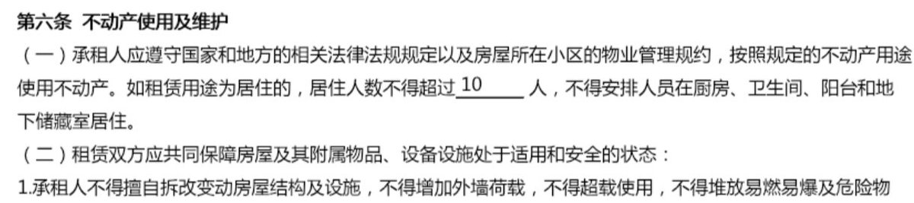
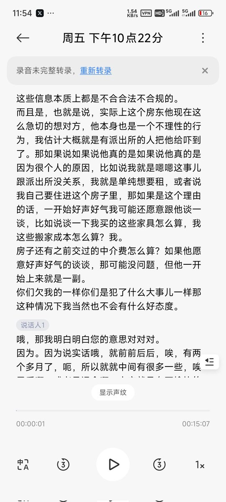

作为当事人我可以额外和你解释，实际情况是：
房东没有证据，反而是我们掌握了房东和派出所的违法证据。如果你曾经在广州打过工租过房，你就会发现这是广州黑房东的惯用话术，在房东想单方面违约之前永远是先反咬一口“租客违约”。但事实上如果真有铁证的租客违约行为。房东就不需要用这种恐吓的手段了。可以直接走当地的法院快速民审流程，也不需要额外付什么搬家费（大陆地区基层现状就是房东有无限主动权，如果不是完全没有证据根本不需要求着租客办事）
而后续事情的发展也不出所料：这个房东和中介包括派出所都拿不出任何所谓的证据，从后来的通话录音就可以听出，最后房东在后来的电话里态度大转弯又开始说“是我儿子大学毕业想用住这个房子，所以才想收回房子，跟你们本身没关系，你们体谅一下我，我给你们赔偿金去找新房子吧”（从这你就可以看出恶劣点，这些黑房东习惯性的欺负不懂法或软弱的租客一开始就想用各种欲加之罪赶人，碰到欺负不过才态度转弯。）
房屋本身面积200平米，合同约定的最大居住人数为同时不超过10人，当前房屋常住人数仅6人，房屋本身租金四千元，一人一天13元的租金分摊额在法律上就属于“租金分摊行为”而非“二房东”（二房东的法律定义必然是收取超额利润且不在房屋内居住）

房东没有证据，反而是我们掌握了房东和派出所的违法证据。如果你曾经在广州打过工租过房，你就会发现这是广州黑房东的惯用话术，在房东想单方面违约之前永远是先反咬一口“租客违约”。但事实上如果真有铁证的租客违约行为。房东就不需要用这种恐吓的手段了。可以直接走当地的法院快速民审流程，也不需要额外付什么搬家费（大陆地区基层现状就是房东有无限主动权，如果不是完全没有证据根本不需要求着租客办事）
而后续事情的发展也不出所料：这个房东和中介包括派出所都拿不出任何所谓的证据，从后来的通话录音就可以听出，最后房东在后来的电话里态度大转弯又开始说“是我儿子大学毕业想用住这个房子，所以才想收回房子，跟你们本身没关系，你们体谅一下我，我给你们赔偿金去找新房子吧”（从这你就可以看出恶劣点，这些黑房东习惯性的欺负不懂法或软弱的租客一开始就想用各种欲加之罪赶人，碰到欺负不过才态度转弯。）
房屋本身面积200平米，合同约定的最大居住人数为同时不超过10人，当前房屋常住人数仅6人，房屋本身租金四千元，一人一天13元的租金分摊额在法律上就属于“租金分摊行为”而非“二房东”（二房东的法律定义必然是收取超额利润且不在房屋内居住）


@FFFFJUN @Light_ASPH 我完全同意對黑心的房東訴諸法律武器維權
但是照原文的截圖來看 對方是有掌握超額居住和人口流動（也就是二租公）的證據的，要求搬遷應屬於合理要求，不知道是怎麼和黑房東劃上等號的。。
但是照原文的截圖來看 對方是有掌握超額居住和人口流動（也就是二租公）的證據的，要求搬遷應屬於合理要求，不知道是怎麼和黑房東劃上等號的。。